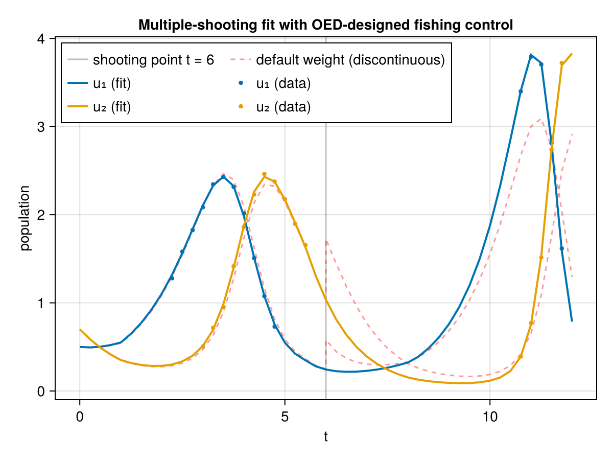

Multiple-shooting parameter estimation with controls from the OED solve
This example combines two ingredients: a multiple-shooting layer and the fixed control produced by an optimal experimental design (OED) solve. The model is the Lotka-Volterra fishing model from the the OED-controlled example: a designed, time-varying fishing control is a known fixed input of the experiment and the two interaction parameters p[2], p[3] are the unknowns.
Instead of integrating the whole horizon in one forward pass (single shooting), the time interval is partitioned at a shooting point and a local state is estimated on each sub-interval together with the model parameters. Continuity ("shooting") residuals are then appended to the least-squares problem to keep the reconstructed trajectory continuous across the partition.
The central point of this example is a weighting issue: the observations are residualized against their noise scale σ (so each is O(1) at the noise floor), but the appended shooting residuals are raw state differences and stay on the state scale – here O(1), much larger than σ = 0.02. With a shooting point at t = 6 the optimizer can therefore stall before it drives the continuity gap to zero, and the default-weight fit produces a visibly discontinuous ODE solution at the shooting point. A higher penalty on the shooting conditions (shooting_scale) is then needed to drive the gap to zero and obtain a (numerically) continuous solution.
Setup
using Corleone, CorleoneInverse
using CorleoneOED
using CairoMakie
using OrdinaryDiffEqTsit5
using NonlinearSolve
using Optimization, OptimizationMOI, Ipopt, ComponentArrays
using LuxCore
using StableRNGs
using LinearAlgebra
using Random
using SymbolicIndexingInterface: parameter_values_at_time, parameter_indexModel dynamics and the OED-designed control
The fishing model: p[1] is the (piecewise-constant) fishing control that replaces the prey growth parameter, and p[2], p[3] are the two interaction parameters we want to estimate.
function fishing_lotka!(du, u, p, t)
du[1] = u[1] - p[2] * prod(u[1:2]) - 0.4 * p[1] * u[1]
du[2] = -u[2] + p[3] * prod(u[1:2]) - 0.2 * p[1] * u[2]
return
end
fish_tspan = (0.0, 12.0)
fish_u0 = [0.5, 0.7]
fish_p0 = [0.0, 1.0, 1.0] # p[1] default = 0 (no fishing) unless the control acts
fish_p_true = [1.0, 1.0] # the two tunable parameters (p[2], p[3])
prob_fish = ODEProblem(fishing_lotka!, fish_u0, fish_tspan, fish_p0)
rng_f = StableRNG(7)
fish_grid = collect(0.0:0.25:11.75) # control grid (piecewise-constant)
measure_times = collect(0.0:0.25:11.75) # candidate observation times
obs_fish = (u, p, t) -> u[1:2] # both species are measurable#2 (generic function with 1 method)Solve the optimal experimental design problem
We wrap the model in a CorleoneOED.OEDLayer with the tunable parameters params = [2, 3], the fishing control on index 1 and two sampling controls (one per measured component). Minimising the DCriterion yields the most informative fishing strategy.
control = Tunable(1; default = 0.0, lowerbound = 0.0, upperbound = 1.0) => fish_grid[2:end]
measurements = (
ContinuousMeasurement(:w1, measure_times, (x, p, t) -> x[1]),
ContinuousMeasurement(:w2, measure_times, (x, p, t) -> x[2]),
)
oed = OEDLayer(prob_fish, Tsit5(), control; params = [2, 3], measurements, controls = [1])
ps_oed, st_oed = LuxCore.setup(Random.default_rng(), oed)
model = CorleoneDynamicOptProblem(oed, DCriterion(); ps = ps_oed, st = st_oed, M = [4.0, 4.0])
optprob = OptimizationProblem(model, AutoForwardDiff())
uopt = solve(
optprob, Ipopt.Optimizer(); tol = 1.0e-8,
hessian_approximation = "limited-memory", max_iter = 300
)
println("OED solve successful: ", SciMLBase.successful_retcode(uopt))This is Ipopt version 3.14.19, running with linear solver MUMPS 5.9.0.
Number of nonzeros in equality constraint Jacobian...: 0
Number of nonzeros in inequality constraint Jacobian.: 288
Number of nonzeros in Lagrangian Hessian.............: 0
Total number of variables............................: 144
variables with only lower bounds: 0
variables with lower and upper bounds: 144
variables with only upper bounds: 0
Total number of equality constraints.................: 0
Total number of inequality constraints...............: 2
inequality constraints with only lower bounds: 0
inequality constraints with lower and upper bounds: 2
inequality constraints with only upper bounds: 0
iter objective inf_pr inf_du lg(mu) ||d|| lg(rg) alpha_du alpha_pr ls
0 7.1148876e-04 7.88e+00 1.16e-04 0.0 0.00e+00 - 0.00e+00 0.00e+00 0
1 8.2911338e-02 0.00e+00 6.38e-02 -0.0 2.13e+00 - 3.23e-02 1.00e+00f 1
2 7.3673734e-02 0.00e+00 8.83e-03 -2.1 6.96e-02 - 9.51e-01 1.00e+00f 1
3 4.7843460e-02 0.00e+00 1.87e-02 -2.9 2.33e-01 - 9.15e-01 1.00e+00f 1
4 3.1556757e-02 0.00e+00 1.42e-02 -3.6 3.17e-01 - 1.00e+00 1.00e+00f 1
5 1.6504795e-02 0.00e+00 5.68e-03 -3.9 8.67e-01 - 9.96e-01 1.00e+00f 1
6 8.6281604e-03 0.00e+00 1.91e-03 -3.4 4.34e+00 - 1.00e+00 1.78e-01f 1
7 3.5284681e-03 0.00e+00 9.31e-04 -3.7 3.06e-01 - 9.38e-01 1.00e+00f 1
8 2.0421314e-03 0.00e+00 1.59e-04 -4.4 1.58e-01 - 9.90e-01 1.00e+00f 1
9 1.2358008e-03 0.00e+00 1.43e-04 -5.1 1.65e-01 - 9.75e-01 1.00e+00f 1
iter objective inf_pr inf_du lg(mu) ||d|| lg(rg) alpha_du alpha_pr ls
10 7.4603614e-04 0.00e+00 9.95e-05 -5.8 1.71e-01 - 9.99e-01 1.00e+00f 1
11 5.5368969e-04 0.00e+00 6.76e-05 -6.6 1.76e-01 - 1.00e+00 7.97e-01f 1
12 4.7202172e-04 0.00e+00 3.43e-05 -7.1 2.32e-01 - 1.00e+00 4.98e-01f 1
13 4.2103860e-04 0.00e+00 3.29e-05 -7.4 4.97e-01 - 1.00e+00 3.44e-01f 1
14 3.9595702e-04 0.00e+00 4.33e-05 -7.7 1.13e+00 - 1.00e+00 1.20e-01f 1
15 3.4970448e-04 0.00e+00 5.67e-05 -7.9 1.49e+00 - 1.00e+00 1.98e-01f 1
16 3.3344337e-04 0.00e+00 3.84e-05 -7.7 1.15e+00 - 1.00e+00 1.22e-01f 1
17 3.1572022e-04 0.00e+00 3.92e-05 -7.7 9.59e-01 - 1.00e+00 1.86e-01f 1
18 3.0062271e-04 0.00e+00 3.46e-05 -7.0 1.68e+00 - 1.00e+00 1.97e-01f 1
19 2.9178383e-04 0.00e+00 1.68e-05 -6.7 1.01e+00 - 1.00e+00 3.78e-01f 1
iter objective inf_pr inf_du lg(mu) ||d|| lg(rg) alpha_du alpha_pr ls
20 2.8662686e-04 0.00e+00 8.39e-06 -6.8 6.94e-01 - 9.99e-01 3.62e-01f 1
21 2.8142336e-04 0.00e+00 5.42e-06 -7.0 6.15e-01 - 1.00e+00 4.05e-01f 1
22 2.7501269e-04 0.00e+00 3.28e-06 -7.3 3.68e-01 - 9.98e-01 5.79e-01f 1
23 2.7092060e-04 0.00e+00 4.34e-06 -7.8 8.68e-01 - 1.00e+00 3.50e-01f 1
24 2.6736485e-04 0.00e+00 4.17e-06 -7.8 3.88e-01 - 9.98e-01 5.11e-01f 1
25 2.6466483e-04 0.00e+00 1.78e-06 -7.7 4.11e-01 - 1.00e+00 9.66e-01f 1
26 2.6339447e-04 0.00e+00 3.80e-07 -7.9 1.91e-01 - 9.98e-01 1.00e+00f 1
27 2.6261857e-04 0.00e+00 3.24e-07 -8.6 1.43e-01 - 1.00e+00 6.26e-01f 1
28 2.6187496e-04 0.00e+00 2.27e-07 -9.4 8.34e-02 - 1.00e+00 1.00e+00f 1
29 2.6181252e-04 0.00e+00 1.56e-07 -10.9 1.11e-02 - 1.00e+00 9.63e-01h 1
iter objective inf_pr inf_du lg(mu) ||d|| lg(rg) alpha_du alpha_pr ls
30 2.6180936e-04 0.00e+00 1.02e-07 -11.0 1.02e-03 - 1.00e+00 9.97e-01f 1
31 2.6180925e-04 0.00e+00 9.75e-09 -11.0 5.72e-03 - 1.00e+00 1.00e+00f 1
Number of Iterations....: 31
(scaled) (unscaled)
Objective...............: 2.6180924593127296e-04 2.6180924593127296e-04
Dual infeasibility......: 9.7520994379681812e-09 9.7520994379681812e-09
Constraint violation....: 0.0000000000000000e+00 0.0000000000000000e+00
Variable bound violation: 0.0000000000000000e+00 0.0000000000000000e+00
Complementarity.........: 1.1713314888900926e-11 1.1713314888900926e-11
Overall NLP error.......: 9.7520994379681812e-09 9.7520994379681812e-09
Number of objective function evaluations = 32
Number of objective gradient evaluations = 32
Number of equality constraint evaluations = 0
Number of inequality constraint evaluations = 32
Number of equality constraint Jacobian evaluations = 0
Number of inequality constraint Jacobian evaluations = 32
Number of Lagrangian Hessian evaluations = 0
Total seconds in IPOPT = 23.696
EXIT: Optimal Solution Found.
OED solve successful: true
Read off the designed fishing control and the per-species OED-selected sampling times.
_, reconstruct = pack(default_vectorizer(), ps_oed)
optimal_ps = reconstruct(uopt.u)
traj_oed, _ = oed(nothing, optimal_ps, st_oed)
position = parameter_index(traj_oed, 1)
control_at(t) = parameter_values_at_time(traj_oed, traj_oed, t)[position]
edges = vcat(first(prob_fish.tspan), fish_grid[2:end], last(prob_fish.tspan))
designed_control = control_at.((edges[1:(end - 1)] .+ edges[2:end]) ./ 2)
w1 = [t for t in measure_times if CorleoneOED.weight_at(oed, traj_oed, :w1, t) > 0.5]
w2 = [t for t in measure_times if CorleoneOED.weight_at(oed, traj_oed, :w2, t) > 0.5]
measure_pts = sort(unique(vcat(w1, w2)))
println("Fishing control starts at: ", round.(designed_control[1:5]; digits = 2), " ...")
println("Species-1 measurement times: ", round.(w1; digits = 2))
println("Species-2 measurement times: ", round.(w2; digits = 2))Fishing control starts at: [1.0, 1.0, 1.0, 1.0, 0.0] ...
Species-1 measurement times: [2.25, 2.5, 2.75, 3.0, 3.25, 3.5, 3.75, 4.0, 4.25, 4.5, 4.75, 10.75, 11.0, 11.25, 11.5, 11.75]
Species-2 measurement times: [3.0, 3.25, 3.5, 3.75, 4.0, 4.25, 4.5, 4.75, 5.0, 5.25, 5.5, 10.75, 11.0, 11.25, 11.5, 11.75]
Simulate the designed experiment
We apply the designed fishing control and observe prey and predator only at their own OED-selected sampling times (w1 and w2, which differ between the two species), adding Gaussian noise – the per-quantity observation times form of Experiment.
function simulate_species_times(cvals, noise_rng; σ = 0.02)
sim_data = ExperimentData(
Experiment(
[w1, w2], [zeros(length(w1)), zeros(length(w2))]; σ = 0.02, u0 = fish_u0,
controls = (
1 => Tunable(1; default = cvals, lowerbound = 0.0, upperbound = 1.0) =>
fish_grid[2:end],
)
)
)
sim = CorleoneInverse.ParameterEstimationLayer(
prob_fish, Tsit5(), sim_data; observed = obs_fish
)
ps, st = LuxCore.setup(noise_rng, sim)
sol, _ = sim(nothing, ps, st)
M = CorleoneInverse.model_values(sim, sol, measure_pts)
prey = M[1, indexin(w1, measure_pts)] .+ σ .* randn(noise_rng, length(w1))
predator = M[2, indexin(w2, measure_pts)] .+ σ .* randn(noise_rng, length(w2))
return prey, predator
end
prey_ctrl, pred_ctrl = simulate_species_times(designed_control, rng_f)
data_control = ExperimentData(
Experiment(
[w1, w2], [prey_ctrl, pred_ctrl]; σ = 0.02, u0 = fish_u0,
controls = (
1 => Tunable(1; default = designed_control, lowerbound = 0.0, upperbound = 1.0) =>
fish_grid[2:end],
)
)
)ExperimentData with 1 experiment and 32 observations (1 experiment with fixed controls)Build the multiple-shooting problem
We pass a single shooting point sp = [6.0], which partitions the horizon into (0, 6) and (6, 12) and introduces a local state at t = 6. The designed fishing control still enters in exactly the same way – as a fixed annotation in controls that is not an optimization variable.
shooting_point = [6.0]
pe_ms = ParameterEstimationLayer(prob_fish, Tsit5(), data_control, shooting_point; observed = obs_fish)ParameterEstimationLayer with 1 experiment and 32 observations (1 experiment with fixed controls)
Tunable Lux parameters per experiment (model parameters, tunable initial
conditions, and control/shooting-state parameters): 52
2 quantities with per-quantity times, σ = 0.02, 1 fixed control, u0 = [0.5, 0.7]
Underlying problem: ODEProblem with uType Vector{Float64} and tType Float64. In-place: true
Non-trivial mass matrix: false
timespan: (0.0, 12.0)
u0: 2-element Vector{Float64}:
0.5
0.7The least-squares residual vector has two blocks: the front block holds the (weighted) observation residuals $(y_{\\text{obs}} - y_{\\text{model}})/\\sigma$, and the back block holds the shooting residuals appended to them – one continuity residual per matching state/parameter/control at each shooting boundary. With the fishing control fixed these are 2 state (prey, predator) plus 2 parameter (the estimable p[2], p[3], since p[1] is the control slot) and 0 control matchings – a fixed control is a known input shared by both intervals, not a shooting unknown.
n_obs = n_observations(data_control)
n_shoot = n_shooting_constraints(pe_ms)
println("Observation residuals: ", n_obs)
println("Appended shooting residuals:", n_shoot)
println("Total residuals: ", n_obs + n_shoot)Observation residuals: 32
Appended shooting residuals:2
Total residuals: 34
Fit with the default shooting weight: discontinuous solution
The observations are residualized against their noise scale σ (so each is O(1) at the noise floor), but the appended shooting residuals are raw state differences on the state scale (here O(1), much larger than σ = 0.02). With the default (unit) weight the optimizer can stall before it drives the continuity gap at t = 6 to zero. We solve and measure the shooting residual left in the solution.
sol_ms = solve(
problem(pe_ms; x0 = vcat([1.3, 0.8], [1.0, 1.0])), GaussNewton();
abstol = 1.0e-9, reltol = 1.0e-9, maxiters = 500
)
est_ms = estimate_parameters(pe_ms, sol_ms)
println("MS (default weight): fitted p = ", round.(est_ms.x; digits = 3), " true = ", fish_p_true)
println("MS (default weight): std errors = ", round.(est_ms.std_errors; digits = 5))MS (default weight): fitted p = [1.032, 0.986] true = [1.0, 1.0]
MS (default weight): std errors = [0.00225, 0.00188]
A helper to read off the raw (unweighted) shooting residuals from the flat solution vector: the last n_shooting_constraints entries of the residual vector.
function shooting_residual(pe, x)
cp = CorleoneInverse.ParameterEstimationProblem(pe)
ps = CorleoneInverse._unflatten(pe, cp.ps0s, x, cp.transforms)
r = CorleoneInverse.residual(pe, ps, cp.st)
return r[(n_observations(pe.data) + 1):end]
end
tic_ms = shooting_residual(pe_ms, sol_ms.u)
println(
"MS (default weight): shooting residual = ", round.(tic_ms; digits = 4),
" |x| = ", round(norm(tic_ms); digits = 4)
)MS (default weight): shooting residual = [0.3301, 0.6894] |x| = 0.7644
The shooting residual left at the optimum is on the state scale (a visible discontinuity at t = 6), because the shooting constraints are unweighted while the observations are weighted by 1/σ. This is exactly the situation described in the introduction: the fit satisfies the data but leaves a discontinuous ODE solution.
We visualise this discontinuity by plotting the raw (unweighted) trajectory pieces on each sub-interval. The two sub-interval trajectories do not meet at t = 6:
traj_default = fitted_parameters(pe_ms, sol_ms).trajectoryTrajectory{}(ControlSymbolCache{}(SymbolicIndexingInterface.SymbolCache{Dict{Symbol, Int64}, Dict{Symbol, Int64}, Nothing, Symbol, Dict{Symbol, Float64}}(Dict(:u₁ => 1, :u₂ => 2), Dict(:p₃ => 3, :p₂ => 2, :p₁ => 1), nothing, :t, Dict(:p₂ => 1.0, :p₃ => 1.0, :u₁ => 0.5, :u₂ => 0.7, :p₁ => 0.0)), [:p₁], Symbol[], Dict{Any, Any}(:p₂ => (-Inf, Inf), :p₃ => (-Inf, Inf), :u₁ => (-Inf, Inf), :u₂ => (-Inf, Inf), :p₁ => (0.0, 1.0))), [[0.5, 0.7], [0.4923429997178702, 0.5858319101648138], [0.4980872626939624, 0.49019341014360907], [0.5153445301242828, 0.4113438273650438], [0.5431055583753923, 0.3471020435490798], [0.6406320223438451, 0.3126273098835211], [0.7613246927400357, 0.2892280848861925], [0.908976864046315, 0.27655234101404497], [1.08725319982516, 0.27524707746722754], [1.2987592025422925, 0.2874145467709829], [1.543181686666142, 0.3174774016689469], [1.8137280437519536, 0.373744176929468], [2.090773390710315, 0.4709683687485979], [2.3322477897444447, 0.633369998231869], [2.4653706226319834, 0.8936116527247929], [2.3997025441507094, 1.2735024720624153], [2.0920961708377415, 1.7329066811167984], [1.625842611240086, 2.1370752030796316], [1.1653458877076028, 2.34360484049199], [0.8160450580017666, 2.323649856696201], [0.58728848156206, 2.1464847308297124], [0.44732179107526243, 1.8961604046725717], [0.3644896123261411, 1.6305661948781147], [0.29015359331442175, 1.3082309775394887], [0.24945442148966115, 1.0352471144829385], [0.5795532107855357, 1.7246568216709057], [0.4472021629121351, 1.447838057743256], [0.3701855174505842, 1.185195541050799], [0.3265629622010048, 0.956200736977989], [0.3041115410500422, 0.7653360413250259], [0.2960973932150003, 0.6103358539745656], [0.298819996458915, 0.4864367004018767], [0.3102910536651273, 0.3883789116724217], [0.32953242777337566, 0.3112674548954312], [0.3801464811055984, 0.26007985354811186], [0.4586405925779528, 0.2245153929265588], [0.557767587617973, 0.19808469395744313], [0.6822448949217285, 0.17962775757246532], [0.8376789562266902, 0.16858485490274897], [1.0304636095589443, 0.165133461334943], [1.2673527670291316, 0.17052242013783495], [1.5542930608873922, 0.18780685176886147], [1.8935996231329724, 0.2234382679498192], [2.2774696877829594, 0.2906981837612619], [2.673850744847585, 0.4168038735381753], [2.9997038171820196, 0.654833915935599], [3.0922050011918563, 1.0877205044910827], [2.7623629588749012, 1.759669588570893], [2.044706024091302, 2.4901029465382525], [1.2949260707005417, 2.916884069831041]], [0.0, 0.25, 0.5, 0.75, 1.0, 1.25, 1.5, 1.75, 2.0, 2.25, 2.5, 2.75, 3.0, 3.25, 3.5, 3.75, 4.0, 4.25, 4.5, 4.75, 5.0, 5.25, 5.5, 5.75, 6.0, 6.0, 6.25, 6.5, 6.75, 7.0, 7.25, 7.5, 7.75, 8.0, 8.25, 8.5, 8.75, 9.0, 9.25, 9.5, 9.75, 10.0, 10.25, 10.5, 10.75, 11.0, 11.25, 11.5, 11.75, 12.0], [Float64[], Float64[], Float64[], Float64[], Float64[], Float64[], Float64[], Float64[], Float64[], Float64[], Float64[], Float64[], Float64[], Float64[], Float64[], Float64[], Float64[], Float64[], Float64[], Float64[], Float64[], Float64[], Float64[], Float64[], [0.33009878929587455, 0.6894097071879672], Float64[], Float64[], Float64[], Float64[], Float64[], Float64[], Float64[], Float64[], Float64[], Float64[], Float64[], Float64[], Float64[], Float64[], Float64[], Float64[], Float64[], Float64[], Float64[], Float64[], Float64[], Float64[], Float64[]], [26], ShootingLayer{}(nothing, SciMLBase.ODEProblem{Vector{Float64}, Tuple{Float64, Float64}, true, Vector{Float64}, SciMLBase.ODEFunction{true, SciMLBase.AutoSpecialize, typeof(Main.var"##2366".fishing_lotka!), LinearAlgebra.UniformScaling{Bool}, Nothing, Nothing, Nothing, Nothing, Nothing, Nothing, Nothing, Nothing, Nothing, Nothing, Nothing, Nothing, typeof(SciMLBase.DEFAULT_OBSERVED), Nothing, Nothing, Nothing, Nothing}, Base.Pairs{Symbol, Union{}, Nothing, @NamedTuple{}}, SciMLBase.StandardODEProblem}(SciMLBase.ODEFunction{true, SciMLBase.AutoSpecialize, typeof(Main.var"##2366".fishing_lotka!), LinearAlgebra.UniformScaling{Bool}, Nothing, Nothing, Nothing, Nothing, Nothing, Nothing, Nothing, Nothing, Nothing, Nothing, Nothing, Nothing, typeof(SciMLBase.DEFAULT_OBSERVED), Nothing, Nothing, Nothing, Nothing}(Main.var"##2366".fishing_lotka!, LinearAlgebra.UniformScaling{Bool}(true), nothing, nothing, nothing, nothing, nothing, nothing, nothing, nothing, nothing, nothing, nothing, nothing, SciMLBase.DEFAULT_OBSERVED, nothing, nothing, nothing, nothing), [0.5, 0.7], (0.0, 12.0), [0.0, 1.0, 1.0], Base.Pairs{Symbol, Union{}, Nothing, @NamedTuple{}}(), SciMLBase.StandardODEProblem()), OrdinaryDiffEqTsit5.Tsit5{typeof(OrdinaryDiffEqCore.trivial_limiter!), typeof(OrdinaryDiffEqCore.trivial_limiter!), FastBroadcast.Serial}(OrdinaryDiffEqCore.trivial_limiter!, OrdinaryDiffEqCore.trivial_limiter!, FastBroadcast.Serial()), SciMLBase.EnsembleSerial(), InitialConditions{}(nothing, SciMLStructures.ArrayRepack{Vector{Float64}}([0.5, 0.7]), (u₁ = InitialCondition{}(:u₁, LookUp{}(Dict(6.0 => 1), nothing), ParameterCollection{}(Corleone.var"#88#89"{Tuple{Float64, Float64}, Vector{Float64}, Float64}((-Inf, Inf), [6.0], 0.5), 1)), u₂ = InitialCondition{}(:u₂, LookUp{}(Dict(6.0 => 1), nothing), ParameterCollection{}(Corleone.var"#88#89"{Tuple{Float64, Float64}, Vector{Float64}, Float64}((-Inf, Inf), [6.0], 0.7), 1))), ([1], [2])), Parameter{}(nothing, SciMLStructures.ArrayRepack{Vector{Float64}}([0.0, 1.0, 1.0]), (p₁ = PiecewiseConstant{}(:p₁, LookUp{}([0.25, 0.5, 0.75, 1.0, 1.25, 1.5, 1.75, 2.0, 2.25, 2.5, 2.75, 3.0, 3.25, 3.5, 3.75, 4.0, 4.25, 4.5, 4.75, 5.0, 5.25, 5.5, 5.75, 6.0, 6.25, 6.5, 6.75, 7.0, 7.25, 7.5, 7.75, 8.0, 8.25, 8.5, 8.75, 9.0, 9.25, 9.5, 9.75, 10.0, 10.25, 10.5, 10.75, 11.0, 11.25, 11.5, 11.75], nothing), ParameterCollection{}(Corleone.var"#173#174"{Vector{Float64}}([0.0, 0.25, 0.5, 0.75, 1.0, 1.25, 1.5, 1.75, 2.0, 2.25, 2.5, 2.75, 3.0, 3.25, 3.5, 3.75, 4.0, 4.25, 4.5, 4.75, 5.0, 5.25, 5.5, 5.75, 6.0, 6.25, 6.5, 6.75, 7.0, 7.25, 7.5, 7.75, 8.0, 8.25, 8.5, 8.75, 9.0, 9.25, 9.5, 9.75, 10.0, 10.25, 10.5, 10.75, 11.0, 11.25, 11.5, 11.75], Core.Box((0.0, 1.0)), Core.Box([0.9999987722675178, 0.9999983536871085, 0.9999974610058666, 0.9999945582470272, 5.5908396792385936e-5, 4.4195156773065774e-6, 2.3140167272518915e-6, 1.5806132414053123e-6, 1.2142326517250449e-6, 1.0207698734826965e-6, 9.124196550539175e-7, 8.170030065873501e-7, 6.928820940087644e-7, 5.22408854031617e-7, 3.6211703352093696e-7, 2.678583021140892e-7, 2.425065943107034e-7, 2.807637677866988e-7, 4.034255917014881e-7, 7.057541223010771e-7, 1.6594024681190102e-6, 2.606409019471089e-5, 0.9999970059008008, 0.999998179731114, 0.9999984728077366, 0.9999985465519503, 0.9999985056421468, 0.9999983668131501, 0.9999981025939909, 0.9999976186037653, 0.9999966124673706, 0.9999935659956828, 0.33700947739839326, 5.568731925805322e-6, 2.540382340785345e-6, 1.5418599072442322e-6, 1.0519012207835269e-6, 7.656148504858922e-7, 5.815092161521801e-7, 4.5638150215852074e-7, 3.6906800732239025e-7, 3.085263010479182e-7, 2.692728003814077e-7, 2.5159030177933423e-7, 2.61175191139921e-7, 3.2832576723744147e-7, 6.104990001176315e-7, 2.410334704281944e-6])), 48)), p₂ = PiecewiseConstant{}(:p₂, LookUp{}(nothing, nothing), (p₂ = ParameterCollection{}(Corleone.var"#173#174"{Vector{Float64}}([0.0], Core.Box((-Inf, Inf)), Core.Box(1.0)), 1), p₃ = ParameterCollection{}(Corleone.var"#173#174"{Vector{Float64}}([0.0], Core.Box((-Inf, Inf)), Core.Box(1.0)), 1)))), ([1], [2, 3])), ControlSymbolCache{}(SymbolicIndexingInterface.SymbolCache{Dict{Symbol, Int64}, Dict{Symbol, Int64}, Nothing, Symbol, Dict{Symbol, Float64}}(Dict(:u₁ => 1, :u₂ => 2), Dict(:p₃ => 3, :p₂ => 2, :p₁ => 1), nothing, :t, Dict(:p₂ => 1.0, :p₃ => 1.0, :u₁ => 0.5, :u₂ => 0.7, :p₁ => 0.0)), [:p₁], Symbol[], Dict{Any, Any}(:p₂ => (-Inf, Inf), :p₃ => (-Inf, Inf), :u₁ => (-Inf, Inf), :u₂ => (-Inf, Inf), :p₁ => (0.0, 1.0)))), (initialcondition = (initialconditions = (u₁ = (lookup = NamedTuple(), parameter = (ps = [0.5795532107855357],)), u₂ = (lookup = NamedTuple(), parameter = (ps = [1.7246568216709057],))),), parameter = (parameters = (p₁ = (lookup = NamedTuple(), parameter = (ps = [0.9999987722675178, 0.9999983536871085, 0.9999974610058666, 0.9999945582470272, 5.5908396792385936e-5, 4.4195156773065774e-6, 2.3140167272518915e-6, 1.5806132414053123e-6, 1.2142326517250449e-6, 1.0207698734826965e-6, 9.124196550539175e-7, 8.170030065873501e-7, 6.928820940087644e-7, 5.22408854031617e-7, 3.6211703352093696e-7, 2.678583021140892e-7, 2.425065943107034e-7, 2.807637677866988e-7, 4.034255917014881e-7, 7.057541223010771e-7, 1.6594024681190102e-6, 2.606409019471089e-5, 0.9999970059008008, 0.999998179731114, 0.9999984728077366, 0.9999985465519503, 0.9999985056421468, 0.9999983668131501, 0.9999981025939909, 0.9999976186037653, 0.9999966124673706, 0.9999935659956828, 0.33700947739839326, 5.568731925805322e-6, 2.540382340785345e-6, 1.5418599072442322e-6, 1.0519012207835269e-6, 7.656148504858922e-7, 5.815092161521801e-7, 4.5638150215852074e-7, 3.6906800732239025e-7, 3.085263010479182e-7, 2.692728003814077e-7, 2.5159030177933423e-7, 2.61175191139921e-7, 3.2832576723744147e-7, 6.104990001176315e-7, 2.410334704281944e-6],)), p₂ = (lookup = NamedTuple(), parameter = (p₂ = (ps = [1.0318198369477611],), p₃ = (ps = [0.9855826628298718],)))),)), (initialcondition = (initialconditions = (u₁ = (lookup = (collection = Dict(6.0 => 1), inserted = Int64[], cache = nothing), parameter = NamedTuple(), active = false), u₂ = (lookup = (collection = Dict(6.0 => 1), inserted = Int64[], cache = nothing), parameter = NamedTuple(), active = false)), active = Bool[0, 0], permutation = [1, 2]), parameter = (parameters = (p₁ = (lookup = (collection = [0.25, 0.5, 0.75, 1.0, 1.25, 1.5, 1.75, 2.0, 2.25, 2.5, 2.75, 3.0, 3.25, 3.5, 3.75, 4.0, 4.25, 4.5, 4.75, 5.0, 5.25, 5.5, 5.75, 6.0, 6.25, 6.5, 6.75, 7.0, 7.25, 7.5, 7.75, 8.0, 8.25, 8.5, 8.75, 9.0, 9.25, 9.5, 9.75, 10.0, 10.25, 10.5, 10.75, 11.0, 11.25, 11.5, 11.75], inserted = Int64[], cache = nothing), parameter = NamedTuple()), p₂ = (lookup = (collection = nothing, inserted = Int64[], cache = nothing), parameter = (p₂ = NamedTuple(), p₃ = NamedTuple()))), permutation = [1, 2, 3]), timestops = [0.0, 0.25, 0.5, 0.75, 1.0, 1.25, 1.5, 1.75, 2.0, 2.25, 2.5, 2.75, 3.0, 3.25, 3.5, 3.75, 4.0, 4.25, 4.5, 4.75, 5.0, 5.25, 5.5, 5.75, 6.0, 6.25, 6.5, 6.75, 7.0, 7.25, 7.5, 7.75, 8.0, 8.25, 8.5, 8.75, 9.0, 9.25, 9.5, 9.75, 10.0, 10.25, 10.5, 10.75, 11.0, 11.25, 11.5, 11.75, 12.0]))Retry with a higher penalty on the shooting conditions
ParameterEstimationProblem accepts a shooting_scale keyword that multiplies the appended shooting residuals, letting us weight the continuity constraints relative to the data fit. If the optimal solution shows a large shooting residual, we increase shooting_scale and re-solve – a standard continuation on the constraint weight (here 1000 drives the gap to ~1e-4, negligible next to the O(1) state scale).
sol_ms2 = solve(
problem(pe_ms; x0 = vcat([1.3, 0.8], [1.0, 1.0]), shooting_scale = 1000), GaussNewton();
abstol = 1.0e-9, reltol = 1.0e-9, maxiters = 1000
)
est_ms2 = estimate_parameters(pe_ms, sol_ms2)
tic_ms2 = shooting_residual(pe_ms, sol_ms2.u)
println("MS (scaled x1000): fitted p = ", round.(est_ms2.x; digits = 3))
println(
"MS (scaled x1000): shooting residual = ", round.(tic_ms2; digits = 6),
" |x| = ", round(norm(tic_ms2); digits = 6)
)MS (scaled x1000): fitted p = [0.999, 1.001]
MS (scaled x1000): shooting residual = [-0.000273, 0.000128] |x| = 0.000301
Both solves recover the same parameters, but the shooting_scale = 1000 solve drives the continuity residual to (near) zero, so the reconstructed multiple-shooting trajectory is (numerically) continuous across the shooting point.
result_ms = fitted_parameters(pe_ms, sol_ms2)
f = CairoMakie.Figure()
ax = CairoMakie.Axis(f[1, 1], xlabel = "t", ylabel = "population", title = "Multiple-shooting fit with OED-designed fishing control")
vlines!(ax, [6.0]; color = (:gray, 0.5), label = "shooting point t = 6")
lines!(ax, collect(traj_default.t), getindex.(traj_default.u, 1); color = (:red, 0.4), linestyle = :dash, label = "default weight (discontinuous)")
lines!(ax, collect(traj_default.t), getindex.(traj_default.u, 2); color = (:red, 0.4), linestyle = :dash)
plot!(ax, result_ms)
axislegend(ax, position = :lt, nbanks = 2)
f
Appendix
This example was built using these direct dependencies,
using Pkg
Pkg.status()Status `~/_work/Corleone.jl/Corleone.jl/docs/Project.toml`
[13f3f980] CairoMakie v0.15.17
[b0b7db55] ComponentArrays v0.15.50
[2751e0db] Corleone v2.0.0 `~/_work/Corleone.jl/Corleone.jl`
[2feaeeb8] CorleoneInverse v0.1.0 `../lib/CorleoneInverse`
[6590a4b1] CorleoneOED v2.0.0 `../lib/CorleoneOED`
[e30172f5] Documenter v1.19.0
[daee34ce] DocumenterCitations v1.5.0
[f6369f11] ForwardDiff v1.4.7
[b6b21f68] Ipopt v1.16.0
[98b081ad] Literate v2.21.0
[b2108857] Lux v1.31.5
[bb33d45b] LuxCore v1.5.4
[961ee093] ModelingToolkit v11.46.1
[8913a72c] NonlinearSolve v4.32.0
[d147904a] OptimalControlBenchmarks v0.1.0 `../lib/OptimalControlBenchmarks`
[7f7a1694] Optimization v5.9.1
[22f7324a] OptimizationLBFGSB v1.5.3
[fd9f6733] OptimizationMOI v1.6.1
[42dfb2eb] OptimizationOptimisers v0.3.26
[6ad6398a] OrdinaryDiffEqBDF v2.4.14
[127b3ac7] OrdinaryDiffEqNonlinearSolve v2.9.10
[b1df2697] OrdinaryDiffEqTsit5 v2.1.5
[860ef19b] StableRNGs v1.1.0
[2efcf032] SymbolicIndexingInterface v0.3.56
[ddb6d928] YAML v0.4.17
[2a0f44e3] Base64 v1.11.0
[9a3f8284] Random v1.11.0
and using this machine and Julia version.
using InteractiveUtils
InteractiveUtils.versioninfo()Julia Version 1.13.3
Commit 67ac47b9cd8 (2026-10-25 15:28 UTC)
Build Info:
Official https://julialang.org release
Platform Info:
OS: Linux (x86_64-linux-gnu)
CPU: 192 × AMD EPYC 9455 48-Core Processor
WORD_SIZE: 64
LLVM: libLLVM-20.1.8 (ORCJIT, znver5)
GC: Built with stock GC
Threads: 1 default, 1 interactive, 1 GC (on 4 virtual cores)
Environment:
JULIA_CPU_THREADS = 4
JULIA_NUM_PRECOMPILE_TASKS = 4
A more complete overview of all dependencies and their versions is also provided.
using Pkg
Pkg.status(; mode = PKGMODE_MANIFEST)Status `~/_work/Corleone.jl/Corleone.jl/docs/Manifest.toml`
[47edcb42] ADTypes v1.24.0
[14f7f29c] AMD v0.5.4
[a4c015fc] ANSIColoredPrinters v0.0.1
[621f4979] AbstractFFTs v1.5.0
[6e696c72] AbstractPlutoDingetjes v1.4.1
[1520ce14] AbstractTrees v0.4.5
[7d9f7c33] Accessors v0.1.46
[79e6a3ab] Adapt v4.8.0
[4f381ef7] AdaptiveArrayPools v0.3.12
[35492f91] AdaptivePredicates v1.2.0
[66dad0bd] AliasTables v1.1.3
[27a7e980] Animations v0.4.2
[ec485272] ArnoldiMethod v0.4.0
[4fba245c] ArrayInterface v7.30.2
[4c555306] ArrayLayouts v1.16.0
[a9b6321e] Atomix v1.7.0
[67c07d97] Automa v1.2.0
[13072b0f] AxisAlgorithms v1.1.0
[39de3d68] AxisArrays v0.4.8
[ab4f0b2a] BFloat16s v0.6.5
[aae01518] BandedMatrices v1.14.0
[198e06fe] BangBang v0.4.9
[18cc8868] BaseDirs v1.4.0
[2027ae74] BibInternal v0.4.0
[13533e5b] BibParser v0.3.0
[f1be7e48] Bibliography v0.4.0
[e2ed5e7c] Bijections v0.2.2
[b2a6c25c] BinaryHeaps v1.1.0
[caf10ac8] BipartiteGraphs v0.1.15
[8e7c35d0] BlockArrays v1.10.3
[70df07ce] BracketingNonlinearSolve v1.12.8
⌅ [fa961155] CEnum v0.5.0
[2a0fbf3d] CPUSummary v0.2.7
[96374032] CRlibm v1.1.1
[159f3aea] Cairo v1.1.1
[13f3f980] CairoMakie v0.15.17
[d360d2e6] ChainRulesCore v1.26.8
[ae650224] ChunkSplitters v3.2.0
[523fee87] CodecBzip2 v0.8.5
[944b1d66] CodecZlib v0.7.9
[6b39b394] CodecZstd v0.8.7
[a2cac450] ColorBrewer v0.4.2
[35d6a980] ColorSchemes v3.32.0
[3da002f7] ColorTypes v0.12.5
[c3611d14] ColorVectorSpace v0.11.2
[5ae59095] Colors v0.13.4
⌅ [861a8166] Combinatorics v1.0.2
[38540f10] CommonSolve v0.2.14
[bbf7d656] CommonSubexpressions v0.3.1
[f70d9fcc] CommonWorldInvalidations v1.2.2
[34da2185] Compat v4.18.1
[b0b7db55] ComponentArrays v0.15.50
[b152e2b5] CompositeTypes v0.1.4
[a33af91c] CompositionsBase v0.1.2
[95dc2771] ComputePipeline v0.1.9
[2569d6c7] ConcreteStructs v0.2.8
[88cd18e8] ConsoleProgressMonitor v0.1.2
[187b0558] ConstructionBase v1.6.0
[d38c429a] Contour v0.6.3
[b7a15901] CoreMath v0.1.0
[2751e0db] Corleone v2.0.0 `~/_work/Corleone.jl/Corleone.jl`
[2feaeeb8] CorleoneInverse v0.1.0 `../lib/CorleoneInverse`
[6590a4b1] CorleoneOED v2.0.0 `../lib/CorleoneOED`
[adafc99b] CpuId v0.3.3
[a8cc5b0e] Crayons v4.2.0
[9a962f9c] DataAPI v1.16.0
[864edb3b] DataStructures v0.19.6
[e2d170a0] DataValueInterfaces v1.0.0
[927a84f5] DelaunayTriangulation v1.7.0
[8bb1440f] DelimitedFiles v1.9.1
[2b5f629d] DiffEqBase v7.21.6
[459566f4] DiffEqCallbacks v4.19.6
[163ba53b] DiffResults v1.1.0
[b552c78f] DiffRules v1.16.0
[a0c0ee7d] DifferentiationInterface v0.7.21
[8d63f2c5] DispatchDoctor v0.4.29
[31c24e10] Distributions v0.25.134
⌅ [ffbed154] DocStringExtensions v0.9.5
[e30172f5] Documenter v1.19.0
[daee34ce] DocumenterCitations v1.5.0
[5b8099bc] DomainSets v0.8.3
⌅ [7c1d4256] DynamicPolynomials v0.6.8
[4e289a0a] EnumX v1.0.7
[f151be2c] EnzymeCore v0.8.27
[429591f6] ExactPredicates v2.2.9
[e2ba6199] ExprTools v0.1.11
[21656369] ExpressionExplorer v1.1.6
[55351af7] ExproniconLite v0.10.16
[b86e33f2] FFTA v0.3.2
[7034ab61] FastBroadcast v1.5.1
[9aa1b823] FastClosures v0.3.2
[9ea80cae] FastInterpolations v0.4.20
[a4df4552] FastPower v1.5.1
[5789e2e9] FileIO v1.20.0
[8fc22ac5] FilePaths v0.9.0
[48062228] FilePathsBase v0.9.24
[1a297f60] FillArrays v1.18.2
[64ca27bc] FindFirstFunctions v3.4.1
[6a86dc24] FiniteDiff v2.33.0
⌅ [53c48c17] FixedPointNumbers v0.8.6
[1fa38f19] Format v1.3.7
[f6369f11] ForwardDiff v1.4.7
[b38be410] FreeType v4.1.1
[663a7486] FreeTypeAbstraction v0.10.8
[a85aefff] FunctionMaps v0.1.2
[069b7b12] FunctionWrappers v1.1.3
[77dc65aa] FunctionWrappersWrappers v1.13.0
[d9f16b24] Functors v0.5.4
[46192b85] GPUArraysCore v0.2.2
⌃ [a0844989] Gamma v1.1.0
[5c1252a2] GeometryBasics v0.5.13
[d7ba0133] Git v1.5.0
[a2bd30eb] Graphics v1.1.3
[86223c79] Graphs v1.15.0
[3955a311] GridLayoutBase v0.11.3
[076d061b] HashArrayMappedTries v0.2.0
[5880b2e8] HelpPlots v1.1.1
[34004b35] HypergeometricFunctions v0.3.31
[b5f81e59] IOCapture v1.0.0
[615f187c] IfElse v0.1.1
[2803e5a7] ImageAxes v0.6.12
[c817782e] ImageBase v0.1.7
[a09fc81d] ImageCore v0.10.5
[82e4d734] ImageIO v0.6.10
[bc367c6b] ImageMetadata v0.9.10
[3263718b] ImplicitDiscreteSolve v2.3.0
[9b13fd28] IndirectArrays v1.0.0
[d25df0c9] Inflate v0.1.5
[22cec73e] InitialValues v0.3.1
[18e54dd8] IntegerMathUtils v0.1.4
[a98d9a8b] Interpolations v0.16.3
[d1acc4aa] IntervalArithmetic v1.0.12
[8197267c] IntervalSets v0.7.15
[3587e190] InverseFunctions v0.1.18
[b6b21f68] Ipopt v1.16.0
[92d709cd] IrrationalConstants v0.2.7
[f1662d9f] Isoband v0.1.1
[c8e1da08] IterTools v1.11.0
[82899510] IteratorInterfaceExtensions v1.0.0
[692b3bcd] JLLWrappers v1.8.0
[682c06a0] JSON v1.13.4
[7d188eb4] JSONSchema v1.6.0
[ae98c720] Jieko v0.2.1
[b835a17e] JpegTurbo v0.1.6
[ccbc3e58] JumpProcesses v10.1.0
⌃ [63c18a36] KernelAbstractions v0.9.45
[5ab0869b] KernelDensity v0.6.13
[ba0b0d4f] Krylov v0.10.12
[5be7bae1] LBFGSB v0.4.1
[2faa5264] LHLFactorization v2.2.2
[929cbde3] LLVM v10.4.3
[b964fa9f] LaTeXStrings v1.4.1
[0e77f7df] LazilyInitializedFields v1.3.0
[8cdb02fc] LazyModules v0.3.1
[1d6d02ad] LeftChildRightSiblingTrees v0.3.0
[87fe0de2] LineSearch v0.1.20
[7ed4a6bd] LinearSolve v5.18.3
[98b081ad] Literate v2.21.0
⌅ [2ab3a3ac] LogExpFunctions v0.3.29
[e6f89c97] LoggingExtras v1.2.0
[b2108857] Lux v1.31.5
[bb33d45b] LuxCore v1.5.4
[82251201] LuxLib v1.15.10
[7e8f7934] MLDataDevices v1.18.0
[1914dd2f] MacroTools v0.5.16
[ee78f7c6] Makie v0.24.17
[dbb5928d] MappedArrays v0.4.3
[d0879d2d] MarkdownAST v0.1.3
[b8f27783] MathOptInterface v1.54.0
[0a4f8689] MathTeXEngine v0.6.9
[bb5d69b7] MaybeInplace v0.1.8
[e1d29d7a] Missings v1.2.1
[961ee093] ModelingToolkit v11.46.1
[7771a370] ModelingToolkitBase v1.79.1
[6bb917b9] ModelingToolkitTearing v1.20.9
[e94cdb99] MosaicViews v0.3.4
[2e0e35c7] Moshi v0.3.13
[46d2c3a1] MuladdMacro v0.2.7
⌅ [102ac46a] MultivariatePolynomials v0.5.20
[d8a4904e] MutableArithmetics v1.9.3
[872c559c] NNlib v0.9.58
[77ba4419] NaNMath v1.1.5
[f09324ee] Netpbm v1.1.1
[8913a72c] NonlinearSolve v4.32.0
[be0214bd] NonlinearSolveBase v2.55.1
[5959db7a] NonlinearSolveFirstOrder v2.10.0
[9a2c21bd] NonlinearSolveQuasiNewton v1.15.3
[26075421] NonlinearSolveSpectralMethods v1.8.3
[510215fc] Observables v0.5.5
[6fe1bfb0] OffsetArrays v1.18.0
[67456a42] OhMyThreads v0.8.9
[52e1d378] OpenEXR v0.3.3
[d147904a] OptimalControlBenchmarks v0.1.0 `../lib/OptimalControlBenchmarks`
[3bd65402] Optimisers v0.4.11
[7f7a1694] Optimization v5.9.1
[bca83a33] OptimizationBase v5.10.1
[22f7324a] OptimizationLBFGSB v1.5.3
[fd9f6733] OptimizationMOI v1.6.1
[42dfb2eb] OptimizationOptimisers v0.3.26
[bac558e1] OrderedCollections v2.0.3
[6ad6398a] OrdinaryDiffEqBDF v2.4.14
[bbf590c4] OrdinaryDiffEqCore v4.19.1
[4302a76b] OrdinaryDiffEqDifferentiation v3.12.5
[127b3ac7] OrdinaryDiffEqNonlinearSolve v2.9.10
[2d112036] OrdinaryDiffEqSDIRK v2.9.8
[b1df2697] OrdinaryDiffEqTsit5 v2.1.5
[90014a1f] PDMats v0.11.41
[f57f5aa1] PNGFiles v0.4.5
[19eb6ba3] Packing v0.5.1
[5432bcbf] PaddedViews v0.5.12
[69de0a69] Parsers v3.0.6
[eebad327] PkgVersion v0.3.3
[995b91a9] PlotUtils v1.5.1
⌃ [e409e4f3] PoissonRandom v0.4.13
[647866c9] PolygonOps v0.1.2
[d236fae5] PreallocationTools v1.7.1
[aea7be01] PrecompileTools v1.3.4
[21216c6a] Preferences v1.6.1
[08abe8d2] PrettyTables v3.5.1
[27ebfcd6] Primes v0.5.7
[33c8b6b6] ProgressLogging v0.1.6
[92933f4c] ProgressMeter v1.13.0
[43287f4e] PtrArrays v1.4.0
[0c0d3e7f] PureKLU v1.6.0
[4b34888f] QOI v1.0.2
[1fd47b50] QuadGK v2.11.3
[b3c3ace0] RangeArrays v0.3.2
[c84ed2f1] Ratios v0.4.5
[a3311ec8] ReactantCore v0.1.26
[988b38a3] ReadOnlyArrays v0.2.0
[795d4caa] ReadOnlyDicts v1.0.1
[3cdcf5f2] RecipesBase v1.4.0
[731186ca] RecursiveArrayTools v4.5.6
[189a3867] Reexport v1.2.2
[2792f1a3] RegistryInstances v0.1.0
[05181044] RelocatableFolders v1.0.1
[ae029012] Requires v1.3.1
[9fe22ead] RespecializeParams v1.3.0
[79098fc4] Rmath v0.9.0
[f2b01f46] Roots v3.0.13
[5eaf0fd0] RoundingEmulator v0.2.1
[7e49a35a] RuntimeGeneratedFunctions v0.5.27
[9dfe8606] SCCNonlinearSolve v1.16.0
[fdea26ae] SIMD v3.8.2
[0bca4576] SciMLBase v3.58.0
[19f34311] SciMLJacobianOperators v0.1.20
[a6db7da4] SciMLLogging v2.1.0
[c0aeaf25] SciMLOperators v1.30.4
[431bcebd] SciMLPublic v1.3.0
[53ae85a6] SciMLStructures v1.10.6
[7e506255] ScopedValues v1.6.2
[6c6a2e73] Scratch v1.3.0
[efcf1570] Setfield v1.2.0
[65257c39] ShaderAbstractions v0.5.1
[73760f76] SignedDistanceFields v0.4.1
[727e6d20] SimpleNonlinearSolve v2.14.6
[699a6c99] SimpleTraits v0.9.6
[45858cf5] Sixel v0.1.6
[ed01d8cd] Sobol v1.5.0
[a2af1166] SortingAlgorithms v1.2.3
[a57abbd0] SparseColumnPivotedQR v2.1.8
[9f842d2f] SparseConnectivityTracer v1.2.4
[0a514795] SparseMatrixColorings v0.4.29
[276daf66] SpecialFunctions v2.9.1
[860ef19b] StableRNGs v1.1.0
[91464d47] StableTasks v0.1.7
[cae243ae] StackViews v0.1.2
⌅ [0c0c59c1] StarAlgebras v0.3.1
[64909d44] StateSelection v1.11.1
[aedffcd0] Static v1.4.6
[0d7ed370] StaticArrayInterface v1.10.0
[90137ffa] StaticArrays v1.9.24
[1e83bf80] StaticArraysCore v1.4.4
[10745b16] Statistics v1.11.5
[82ae8749] StatsAPI v1.8.0
[2913bbd2] StatsBase v0.34.13
⌃ [4c63d2b9] StatsFuns v1.5.3
[69024149] StringEncodings v0.3.7
[892a3eda] StringManipulation v0.6.1
[09ab397b] StructArrays v0.7.4
[ec057cc2] StructUtils v2.12.0
[2efcf032] SymbolicIndexingInterface v0.3.56
[19f23fe9] SymbolicLimits v1.2.2
[d1185830] SymbolicUtils v4.55.0
[0c5d862f] Symbolics v7.48.0
[3783bdb8] TableTraits v1.0.1
[bd369af6] Tables v1.14.0
[ed4db957] TaskLocalValues v0.1.3
[62fd8b95] TensorCore v0.1.1
[8ea1fca8] TermInterface v2.0.1
[5d786b92] TerminalLoggers v0.1.8
[1c621080] TestItems v1.1.0
[731e570b] TiffImages v0.11.9
[a759f4b9] TimerOutputs v1.2.2
[3bb67fe8] TranscodingStreams v0.11.3
[981d1d27] TriplotBase v0.1.0
[781d530d] TruncatedStacktraces v1.4.0
[5c2747f8] URIs v1.7.3
[3a884ed6] UnPack v1.0.2
[1cfade01] UnicodeFun v0.4.1
[1986cc42] Unitful v1.29.0
[013be700] UnsafeAtomics v0.4.0
[d30d5f5c] WeakCacheSets v0.1.0
[e3aaa7dc] WebP v0.1.3
[d49dbf32] WeightInitializers v1.3.5
[efce3f68] WoodburyMatrices v1.1.0
[ddb6d928] YAML v0.4.17
[ae81ac8f] ASL_jll v0.1.5+0
[6e34b625] Bzip2_jll v1.0.9+0
[4e9b3aee] CRlibm_jll v1.0.1+0
[83423d85] Cairo_jll v1.18.8+1
[a38c48d9] CoreMath_jll v0.1.0+0
⌅ [5ae413db] EarCut_jll v2.2.4+0
[2e619515] Expat_jll v2.10.0+0
[b22a6f82] FFMPEG_jll v9.0.2+0
[a3f928ae] Fontconfig_jll v2.18.3+0
⌅ [d7e528f0] FreeType2_jll v2.14.3+1
[559328eb] FriBidi_jll v1.0.19+0
⌅ [b0724c58] GettextRuntime_jll v0.22.4+0
[59f7168a] Giflib_jll v6.1.3+0
[020c3dae] Git_LFS_jll v3.8.1+0
[f8c6e375] Git_jll v2.56.0+0
[7746bdde] Glib_jll v2.90.1+0
[3b182d85] Graphite2_jll v1.3.16+0
[2e76f6c2] HarfBuzz_jll v100.15001.0+0
[e33a78d0] Hwloc_jll v2.15.0+0
[905a6f67] Imath_jll v3.2.2+0
[1d5cc7b8] IntelOpenMP_jll v2025.2.0+0
⌅ [9cc047cb] Ipopt_jll v300.1400.1902+0
[aacddb02] JpegTurbo_jll v3.2.1+0
[c1c5ebd0] LAME_jll v3.100.3+0
[88015f11] LERC_jll v4.3.0+0
[dad2f222] LLVMExtra_jll v0.0.56+0
[1d63c593] LLVMOpenMP_jll v23.1.1+0
[81d17ec3] L_BFGS_B_jll v3.0.1+0
⌅ [e9f186c6] Libffi_jll v3.4.7+0
[7e76a0d4] Libglvnd_jll v1.7.1+1
[94ce4f54] Libiconv_jll v1.18.0+0
[4b2f31a3] Libmount_jll v2.42.4+0
[89763e89] Libtiff_jll v4.7.3+0
[38a345b3] Libuuid_jll v2.42.4+0
[d00139f3] METIS_jll v5.1.4+0
[856f044c] MKL_jll v2025.2.0+0
[d7ed1dd3] MUMPS_seq_jll v500.900.100+0
[e7412a2a] Ogg_jll v1.3.6+0
[656ef2d0] OpenBLAS32_jll v0.3.34+1
[6cdc7f73] OpenBLASConsistentFPCSR_jll v0.3.34+0
[18a262bb] OpenEXR_jll v3.5.3+0
⌅ [95196869] OpenJPH_jll v0.32.0+0
[9bd350c2] OpenSSH_jll v10.6.1+0
[efe28fd5] OpenSpecFun_jll v0.5.6+0
[91d4177d] Opus_jll v1.6.1+0
[36c8627f] Pango_jll v1.58.2+0
[30392449] Pixman_jll v0.46.4+0
[f50d1b31] Rmath_jll v0.5.2+0
[319450e9] SPRAL_jll v2025.9.18+1
[02c8fc9c] XML2_jll v2.15.4+0
[ffd25f8a] XZ_jll v5.8.4+0
[4f6342f7] Xorg_libX11_jll v1.8.14+0
[0c0b7dd1] Xorg_libXau_jll v1.0.13+0
[a3789734] Xorg_libXdmcp_jll v1.1.6+0
[1082639a] Xorg_libXext_jll v1.3.8+0
[d091e8ba] Xorg_libXfixes_jll v6.0.2+0
[ea2f1a96] Xorg_libXrender_jll v0.9.13+0
[a65dc6b1] Xorg_libpciaccess_jll v0.19.0+0
[c7cfdc94] Xorg_libxcb_jll v1.17.1+0
[c5fb5394] Xorg_xtrans_jll v1.6.0+0
[9a68df92] isoband_jll v0.2.3+0
[a4ae2306] libaom_jll v3.15.3+0
[0ac62f75] libass_jll v0.17.5+0
[46979653] libdeflate_jll v1.26.0+1
[8e53e030] libdrm_jll v2.4.134+0
⌅ [f638f0a6] libfdk_aac_jll v2.0.4+0
[b53b4c65] libpng_jll v1.6.59+1
[075b6546] libsixel_jll v1.80.702+0
[9a156e7d] libva_jll v2.24.1+0
[f27f6e37] libvorbis_jll v1.3.8+0
[c5f90fcd] libwebp_jll v1.6.1+0
[1317d2d5] oneTBB_jll v2023.1.0+0
⌅ [1270edf5] x264_jll v10164.0.1+0
⌅ [dfaa095f] x265_jll v4.1.0+0
[0dad84c5] ArgTools v1.1.2
[56f22d72] Artifacts v1.11.0
[2a0f44e3] Base64 v1.11.0
[8bf52ea8] CRC32c v1.11.0
[ade2ca70] Dates v1.11.0
[8ba89e20] Distributed v1.11.0
[f43a241f] Downloads v1.7.0
[7b1f6079] FileWatching v1.11.0
[9fa8497b] Future v1.11.0
[b77e0a4c] InteractiveUtils v1.11.0
[ac6e5ff7] JuliaSyntaxHighlighting v1.12.0
[4af54fe1] LazyArtifacts v1.11.0
[b27032c2] LibCURL v1.0.0
[76f85450] LibGit2 v1.11.0
[8f399da3] Libdl v1.11.0
[37e2e46d] LinearAlgebra v1.13.0
[56ddb016] Logging v1.11.0
[d6f4376e] Markdown v1.11.0
[a63ad114] Mmap v1.11.0
[ca575930] NetworkOptions v1.3.0
[44cfe95a] Pkg v1.13.0
[de0858da] Printf v1.11.0
[3fa0cd96] REPL v1.11.0
[9a3f8284] Random v1.11.0
[ea8e919c] SHA v1.0.0
[9e88b42a] Serialization v1.11.0
[1a1011a3] SharedArrays v1.11.0
[6462fe0b] Sockets v1.11.0
[2f01184e] SparseArrays v1.13.0
[f489334b] StyledStrings v1.11.0
[4607b0f0] SuiteSparse
[fa267f1f] TOML v1.0.3
[a4e569a6] Tar v1.10.0
[8dfed614] Test v1.11.0
[cf7118a7] UUIDs v1.11.0
[4ec0a83e] Unicode v1.11.0
[e66e0078] CompilerSupportLibraries_jll v1.5.5+2
[deac9b47] LibCURL_jll v8.22.0+0
[e37daf67] LibGit2_jll v1.9.7+0
[29816b5a] LibSSH2_jll v1.11.104+0
[14a3606d] MozillaCACerts_jll v2026.10.20
[4536629a] OpenBLAS_jll v0.3.30+0
[05823500] OpenLibm_jll v0.8.7+0
[458c3c95] OpenSSL_jll v3.5.8+0
[efcefdf7] PCRE2_jll v10.47.0+0
[bea87d4a] SuiteSparse_jll v7.10.1+0
[83775a58] Zlib_jll v1.3.2+0
[3161d3a3] Zstd_jll v1.5.7+1
[8e850b90] libblastrampoline_jll v5.15.0+0
[8e850ede] nghttp2_jll v1.70.0+0
[3f19e933] p7zip_jll v17.8.3+0
Info Packages marked with ⌃ and ⌅ have new versions available. Those with ⌃ may be upgradable, but those with ⌅ are restricted by compatibility constraints from upgrading. To see why use `status --outdated -m`
This page was generated using Literate.jl.